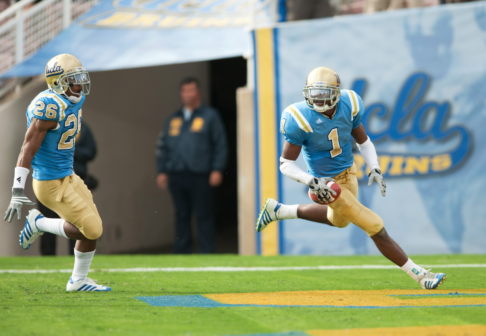
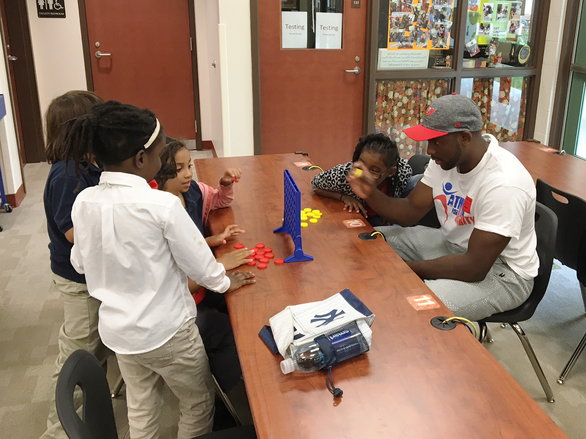
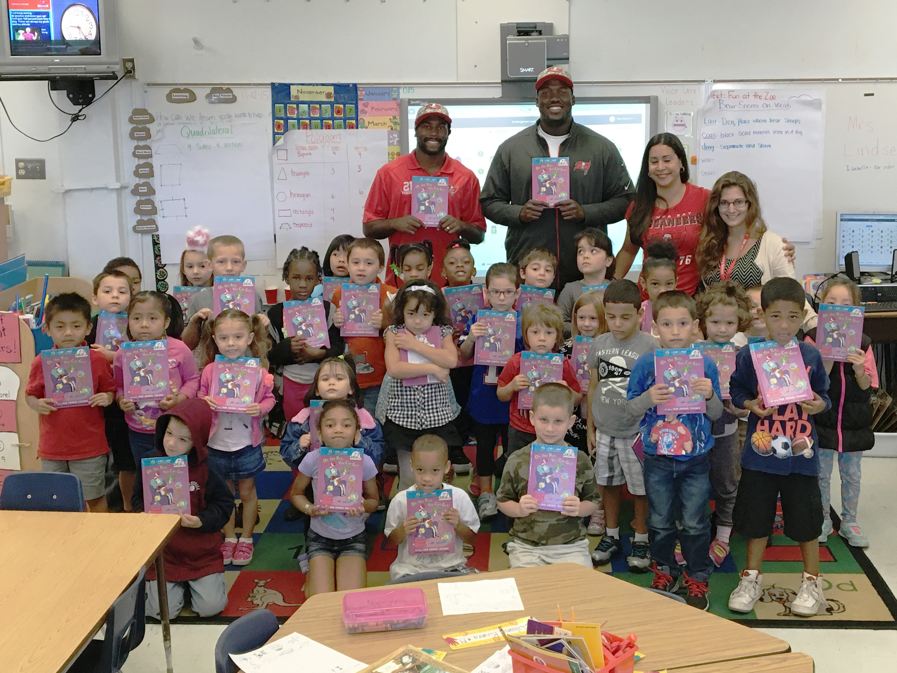

Alterraun Verner calls himself "just a normal guy."
The UCLA alumnus posts pictures on Instagram of his family on vacation, friends goofing off in a photo booth at Mayfair High School’s 10-year reunion and himself working out and playing football.
But Verner, who now plays for the Tampa Bay Buccaneers, also puts up hundreds of Bible verses and inspirational quotes like "It is more blessed to give than to receive."
Off the field, he lives by the words he posts.

Alterraun Verner (right), a UCLA alumnus, played Division I football while balancing his studies for his major, mathematics/applied science. (UCLA Athletics)
Alterraun Verner (right), a UCLA alumnus, played Division I football while balancing his studies for his major, mathematics/applied science. (UCLA Athletics)
The cornerback throws himself into philanthropy events at every opportunity. Volunteering as an ambassador for Athletes for Charity in the Florida area, he mentors young kids, encouraging them to focus on their schoolwork by providing them with not only books through the Youth Literacy Initiative but also a role model to emulate.
Having grown up as a Bruin fan, Verner credits the high standards set by student-athletes in Westwood for motivating him to be more than just a football player.
His mom and dad, who have degrees in business administration and mechanical engineering, also instilled in Verner and his two sisters the importance of earning a college degree.
Although he was drafted in the fourth round of the 2010 draft by the Tennessee Titans and later signed a four-year, $25.5 million deal in 2014 with the Tampa Bay Buccaneers, he was determined to return to UCLA to finish his degree, wanting the option of a fallback when his football career ends.
"Academics were a strong focus in my life,” Verner said in an interview with ESPN. “The degree is going to last way longer than my football career. That was instilled in me by my parents from a young age, so that's why I always knew I would eventually go back to get my degree."
"Academics were a strong focus in my life. The degree is going to last way longer than my football career. That was instilled in me by my parents from a young age, so that's why I always knew I would eventually go back to get my degree."
Alterraun Verner, UCLA alumnus
Verner graduated with a bachelor's degree in mathematics/applied science in 2011, but the initial transition from high school to UCLA wasn’t easy for the former three-star recruit.
Like many college freshmen, Verner thought the jump to college life would be seamless. He was a math and history peer tutor for his high school football team at Mayfair High School, had a 4.17 GPA and lettered in football and track and field for four years.

Alterraun Verner spends much of his time off the field volunteering with Athletes for Charity. (Courtesy of Cathleen Laporte)
Alterraun Verner spends much of his time off the field volunteering with Athletes for Charity. (Courtesy of Cathleen Laporte)
The Orange, California native struggled to meet the demands of playing Division I football with a full course load, studying calculus and writing essays late into the night.
Putting away his pride, Verner said, was the difference between succeeding and struggling.
It was hard for the overachiever to ask for help, wanting to figure things out himself until he got the answer, no matter how long it takes.
But taking that step – asking teammates, coaches, academic counselors and professors – helped him achieve his goals on and off the field.
As a true freshman, Verner was named co-Freshman of the Year for the then-Pac-10 Conference and first-team Freshman All-American after tallying 59 tackles and two interceptions for 123 yards and two touchdowns. In his sophomore, junior and senior seasons, he made the All-Pac-12 academic team and earned an academic All-American nod as a sophomore.
The mentors and support systems he found at high school and at UCLA influenced him into being that role model for others – the help they could rely on.
By partnering with Cathleen Laporte, the president of Athletes for Charity, and then later collaborating with Moment, a company that connects pro athletes with their fans, he was able to raise awareness for a variety of causes.
As one of the first athletes to join the Moment campaign, Verner makes customized videos for his fans, building a personal connection with them while simultaneously raising money that goes straight to Athletes for Charity and the projects and events they put on.
"(Verner) is one of the most charitable athletes that we’ve associated with," said Moment founder Michael Williams. "His giving defines him off the field."

Alterraun Verner visited elementary and middle schools to raise awareness for education through the Youth Literacy Initiative. He would also help fundraise for books. (Courtesy of Cathleen Laporte)
Alterraun Verner visited elementary and middle schools to raise awareness for education through the Youth Literacy Initiative. He would also help fundraise for books. (Courtesy of Cathleen Laporte)
From Thanksgiving dinners for the homeless to hosting 800 kids at a football and cheer camp and organizing annual holiday Bible drives, Verner commits to leaving an impact on the people around him.
The six-year NFL veteran began visiting elementary and middle schools as a rookie in Tennessee before continuing his efforts in Florida after he was traded to Tampa in 2014.
Many of his charity efforts hinge on raising awareness for education through the Youth Literacy Initiative and fundraising money for books.
In 2011, while visiting students at Apollo Middle School in Antioch, Tennessee, Verner emphasized the the importance of making good choices.
Verner told the students that he wouldn’t be the player he is today if he hadn’t made the choices he did – calling Sunday football games his tests because he spends hours studying his opponents.
For the consummate student-athlete, nothing would mean more to Verner than seeing a young boy or girl work to reach his or her goals.
"That would be what it's all about." said Verner "That'd be gratifying and the ultimate satisfaction – to watch a kid achieve their dreams."